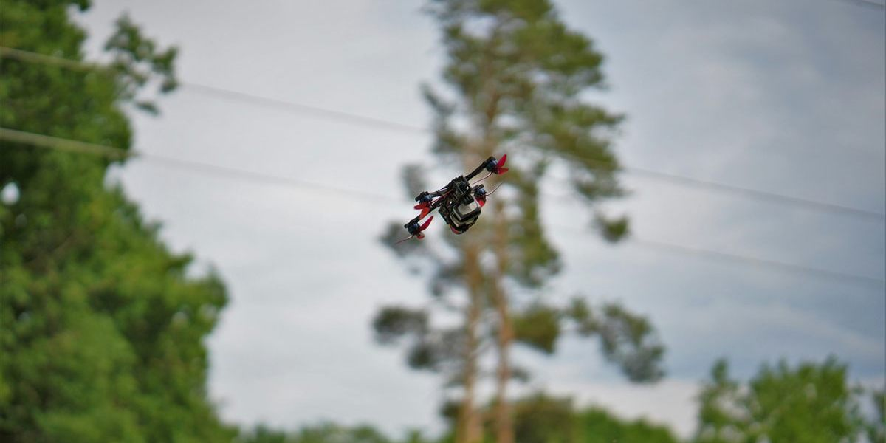
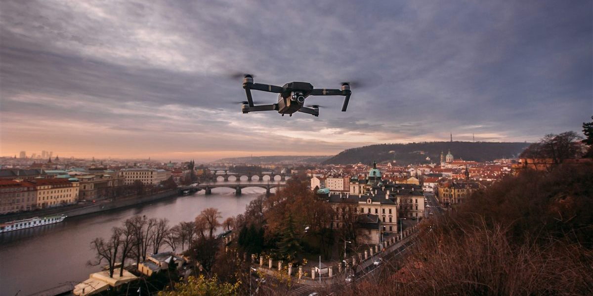

Freestyle

Tähän tulee myöhemmin esittely freestyle-lentämisestä, kuvia drooneista ja videota. Tästä löytyy videoita omasta takaa.
Cinematic

Tähän tulee myöhemmin esittely cinematic-lentämisestä, kuvia drooneista ja videota.
Harrastuksen kaksi ääripäätä: temppuilu ja elokuvamainen kuvaaminen.

Tähän tulee myöhemmin esittely freestyle-lentämisestä, kuvia drooneista ja videota. Tästä löytyy videoita omasta takaa.

Tähän tulee myöhemmin esittely cinematic-lentämisestä, kuvia drooneista ja videota.